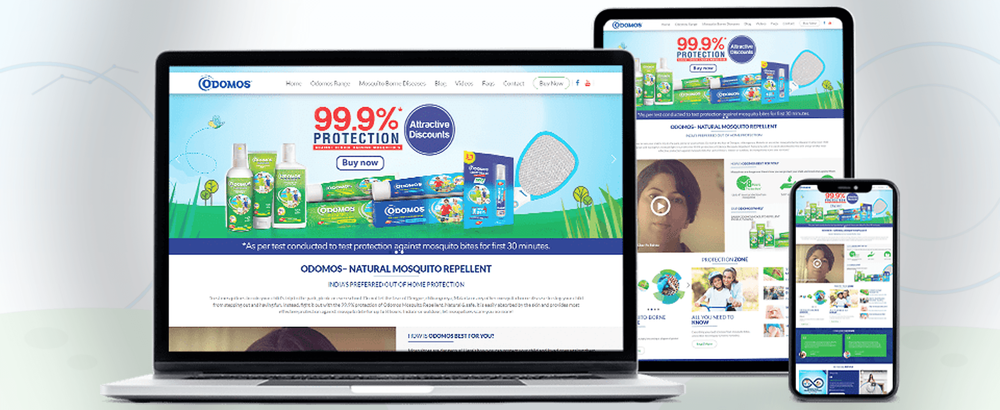
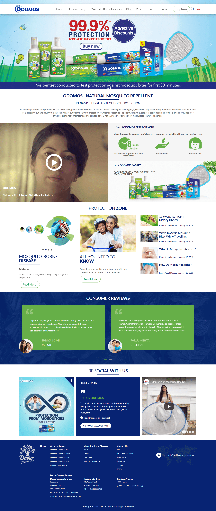
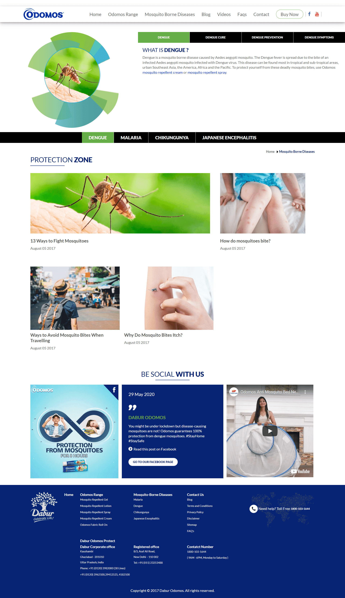
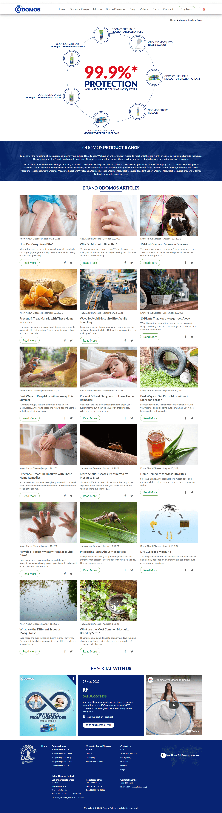

Creams, gels, lotions, sprays, roll-ons and adjacent formats needed one understandable portfolio structure.
← Back to workProtection made clear.
Dabur Odomos Protect · Brand Website
Protection made clear.
Freedom kept visible.

Project overview
Turn protection
into everyday confidence.
Odomos supports families with a broad range of personal mosquito-repellent formats for different routines and environments.
We built a responsive platform that connects product discovery with mosquito-awareness content, prevention information, reviews and social stories.
- Platform
- Brand + Awareness
- Portfolio
- Protection Range
- Content
- Disease Education
- Build
- Responsive Web
The organising idea
Protection starts
before the first bite.
The website brings product and prevention into the same experience. Users can understand the range, learn about mosquito-borne diseases and explore practical protection content without changing context.
The result is a platform designed around preparedness rather than fear.
The experience challenge
Cover a broad range.
Keep every path simple.
Disease and prevention content had to remain scannable, responsible and easy to navigate across devices.
The protection journey
Know the risk.
Find the right protection.
- 01
Recognise
Lead with a clear protection proposition and the complete product family.
- 02
Understand
Explain mosquito-borne diseases and prevention through structured content.
- 03
Choose
Help users move between formats according to routine and application.
- 04
Continue
Use articles, reviews and social content to support repeat discovery.
The website ecosystem
Products, prevention
and practical knowledge.
Three connected page types turn a wide information landscape into a coherent protection destination.
Protection homepageRange, education, reviews and social content

Disease educationStructured condition and prevention content

Range and articlesProduct architecture connected to useful reading

The content system
Prepared for the season.
Useful throughout the year.
Portfolio clarity
One visual system keeps different protection formats connected and easy to scan.
Protection zone
Disease and prevention topics create clear routes into deeper information.
Editorial library
Reusable article cards support recurring seasonal and behavioural questions.
Trust signals
Reviews, videos and social posts balance brand information with recognisable experiences.
Responsive by design
One protection system.
Every screen covered.
The responsive layout preserves hierarchy from the wide product-led desktop experience to compact mobile reading and decision-making.

The outcome
A product portfolio
turned into a protection platform.
A responsive destination that helps families understand mosquito risks, navigate the Odomos range and return for practical protection content.
Connected range
Multiple formats are presented as one coherent family of personal protection choices.
Useful education
Structured disease and prevention content gives the brand a wider informational role.
Repeat relevance
Articles, reviews and social modules create reasons to revisit beyond a single purchase.
Know more.Step out protected.
Building a useful product ecosystem?